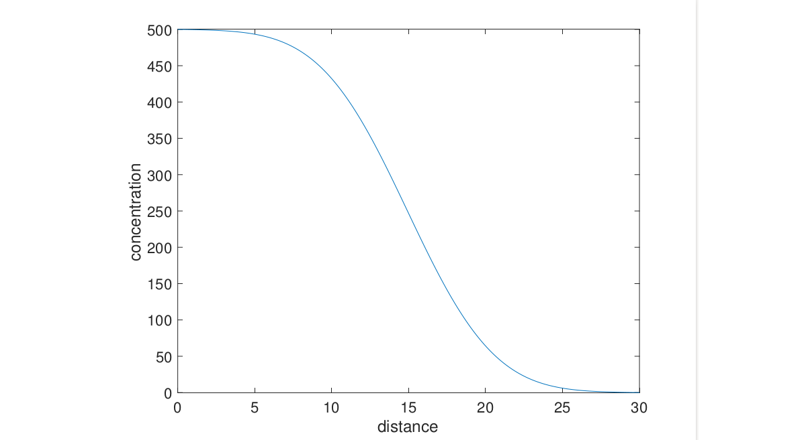
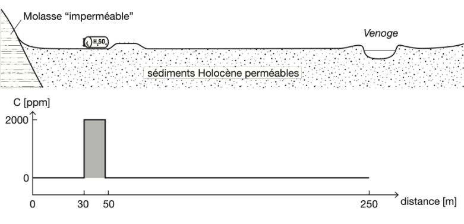

Exercices 4#
L’objectifs des exercices est de comprendre l’équation de diffusion en 1D, et sa discrétisation, d’implémenter un modèle simple de diffusion en 1D pour un problème de concentration, et de l’appliquer à un problème concret.
Tutorial 1: Se familiariser avec l’approximation d’un dérivée spatiale#
Pour résoudre un modèle (p.e. de diffusion), il nous faudra trés souvent dans ces modèles appoximer des dérivées, c.a.d. de facçon numérique (pas de façon exacte/analytique). Pour illustrer cela, nous définisons un vecteur \(F\) avec la fonction sinus, sa dérivée “exacte” définit avec la fonction cosinus, et sa dérivée “approchée” défini au moyen d’une différence finie (approximation que nous utiliserons à mainte reprise dans ce cours). Le code suivant fait tout cela, et montre que la dérivée approximative est trés proche de la dérivée exacte:
import numpy as np
import matplotlib.pyplot as plt
# Define x and dx
nx = 100
x = np.linspace(0, 2 * np.pi, nx) # Example range of x
dx = x[1] - x[0] # Compute dx
# Compute F, dFdx_exact, and dFdx_appro
F = np.sin(x)
dFdx_exact = np.cos(x)
dFdx_appro = (F[1:] - F[:-1]) / dx
# Compute midpoints (xm)
xm = (x[1:] + x[:-1]) / 2
# Plotting
plt.plot(x, dFdx_exact, label="dF/dx exact (blue)", color="blue")
plt.plot(xm, dFdx_appro, label="dF/dx approx (red)", color="red", linestyle="--")
# Add labels, legend, and title
plt.xlabel("x")
plt.ylabel("dF/dx")
plt.title("Comparaison entre dérivées Exact et Approximative")
plt.legend()
# Display the plot
plt.grid(True)
plt.show()
Notons que pour afficher les deux dFdx_exact et dFdx_approx sur un meme graphique, il a fallue calculer les points au centre des cellules xm = (x[1:] + x[:-1]) / 2 cat la dérivée approximative est de taille nx-1 puisque l’on perd une cellule lors de la différence finie (F[1:] - F[:-1]) / dx, il faut donc “plotter” dFdx_approx par rapport à xm et non x qui est de taille nx.
Exercice 1 : Diffusion simple d’une concentration#
Vous allez maintenant rédiger un code qui permette de résoudre numériquement l’équation de diffusion de la concentration \(C\):
dans un domaine \([0,L_x]\), où \(L_x=30\).
Pour pouvoir faire le calcul, il faut également une condition initiale (concentration C=C_i dans la moitié gauche et C=0 dans la moitié droite) et des conditions aux limites qui sont fixes à x=0 et x=Lx (c.a.d. les mêmes que les conditions initiales). La figure suivante montre le résultat attendue aprés 20 secondes de diffusion.

Résultat de la diffusion après 20 secondes.
Toutes les valeurs nécessaires sont dans la table suivante:
Paramètres |
Valeurs |
|---|---|
Longueur du modèle (Lx) |
30 m |
Diffusivité (D) |
0.8 m²/s |
Condition initiale moitié gauche |
500 ppm |
Condition initiale moitié droite |
0 ppm |
Condition limite gauche |
500 ppm |
Condition limite droite |
0 ppm |
Temps total |
20 s |
Tableau 1 : Paramètres pour l’équation de diffusion.
Pour résoudre l’exercice, veuillez utiliser la structure de code suivante pour l’initialisation et la boucle temporelle. Complétez ensuite les paramètres, l’initialisation et l’implémentation des équations (1) et (2).
import numpy as np
import matplotlib.pyplot as plt
from IPython.display import clear_output, display
# Physical parameters
D = ... # diffusivite
Lx = ... # longueur of model
C_l = ... # Condition de bord gauche
C_r = ... # Condition de bord droit
ttot = ... # temps total
# Numerical parameters
nx = 200 # nombre de cellules
dx = Lx / (nx - 1) # taille d'une cellule
x = np.linspace(0, Lx, nx) # coordonees des point du maillage
dt = dx**2 / (2.1 * D) # condition sur le pas de temps
nt = ... # nombre de pas de temps
nout = 100 # afficher la figure chaque 100e step
# Initial conditions
C = ...
C[:int(nx/2)] = ...
# create the figure outside the loop
fig, ax = plt.subplots()
# loop
for it in range(nt):
# Mettre a jour le flux q en fonction de C
q = ...
# Mettre a jour dCdt
dCdt = ...
# Mettre a jour C
C[1:-1] += ...
# plot
if it % nout == 0:
clear_output(wait=True)
ax.cla()
ax.plot(x, C)
ax.set_xlabel('Distance')
ax.set_ylabel('Concentration')
display(fig)
plt.pause(0.1)
✅ À vous de faire !#
import numpy as np
import matplotlib.pyplot as plt
from IPython.display import clear_output, display
# Exercise 1: Concentration Diffusion
# Physical parameters
D = 0.8 # diffusivite
Lx = 30 # longueur of model
C_l = 500 # Condition de bord gauche
C_r = 0 # Condition de bord droit
ttot = 20 # temps total
# Numerical parameters
nx = 200 # nombre de cellules
dx = Lx / (nx - 1) # taille d'une cellule
x = np.linspace(0, Lx, nx) # coordonees des point du maillage
dt = dx**2 / (2.1 * D) # condition sur le pas de temps
nt = int(ttot / dt) # nombre de pas de temps
nout = 100 # afficher la figure chaque 100e step
# Initial conditions
C = np.ones(nx) * C_r
C[:int(nx/2)] = C_l
# create the figure outside the loop
fig, ax = plt.subplots()
# Action
for it in range(nt):
qx = - D * (C[1:] - C[:-1]) / dx # Mettre a jour le flux q en fonction de C
dCdt = - (qx[1:] - qx[:-1]) / dx # Mettre a jour dCdt
C[1:-1] += dt * dCdt # Mettre a jour C
# plot
if it % nout == 0:
clear_output(wait=True) # clear the output in VS Code
ax.cla() # clear the current axes
ax.plot(x, C)
ax.set_xlabel('Distance')
ax.set_ylabel('Concentration')
display(fig)
plt.pause(0.1) # pause to visualize updates
Exercice 2 : Modélisation de la fuite chimique de Daillens en avril 2015#
Imaginez la fuite d’acide sulfurique qui a suivi l’accident ferroviaire de Daillens, VD, en 2015 près de la Venoge (voir RTS. Les mesures lors de l’intervention et du rétablissement ont prévenus des contaminations de la nappe phréatique et de la Venoge. Le modèle représente une ligne qui va de la source de pollution (les wagons renversés qui ont déversé 25 tonnes de H2SO4) au puits local, la Venoge.
Il s’agit ici d’implémenter un modèle qui représente une version simplifiée de l’évolution de la pollution sans intervention post-accident (retrait de 1350 tonnes de sol). De plus, il sera considéré que le H2SO4 ne se dégrade pas et ne se déplace que par diffusion. Reprenez le code de l’exercice précédent en adaptant la configuration initiale (Figure ci-dessous) et les paramètres de la table ci-dessous (en prenant garde aux unités). De plus, il faudra apporter de nouvelles choses au code :
Vous effectuerez un changement des conditions aux frontières. Jusqu’à présent, les conditions aux frontières imposaient implicitement une concentration inchangée au bord, c’est-à-dire les mêmes que les conditions initiales étant donné que les valeurs de la solution aux bords ne sont pas mises à jour. Ici, la condition de bord \(C = 0\) est une condition dite de “Dirichlet”. Une autre condition de bord (dite de “Neumann”) impose \(\frac{\partial C}{\partial x} = 0\), c’est-à-dire qu’il n’y a plus d’échange vers l’extérieur, en forçant un flux nul aux bords (en raison de l’équation (2)). Numériquement parlant, cela revient à imposer que les deux cellules de bord aient la même valeur. Dans le cas présent, on suppose une molasse imperméable qui rend tout flux vers l’extérieur impossible à l’extrémité gauche, et que la concentration à l’extrémité droite du modèle doit être maintenue à zéro afin que tout le polluant puisse quitter le domaine. On implémente ces deux conditions ainsi en Python dans la boucle temporelle après la mise à jour de la diffusion :
C[0] = C[1]
C[-1] = 0
Vous implémenterez une clause conditionnelle dans la boucle temporelle pour déterminer quand le niveau de contamination de la Venoge en H2SO4 dépasse 0.1 ppm pour la première fois (utilisez un flag). Vous ajouterez un affichage de cette valeur à la fin du code.
Vous implémenterez une clause conditionnelle dans la boucle temporelle pour déterminer quand le flux qui s’épanche dans la Venoge commence à diminuer pour la première fois (utilisez un flag). Vous ajouterez un affichage de cette valeur à la fin du code. Pour cela, il est utile de sauvegarder le flux avant la mise à jour. Cependant, la commande
q_old = qne sera pas efficace en Python, carq_old = qchangera automatiquement lorsqueqsera mis à jour (une spécificité de Python). En Python, il faut créer une “copie” explicitement avec la commandeq_old = np.copy(q), qui permettra de créer une nouvelle variableq_oldretenant l’ancienne valeur deq, même après que celle-ci soit mise à jour.
Enfin, une fois le code terminé, faites des tests numériques avec plusieurs valeurs de \(n_x\), et trouvez à partir de quelle valeur de \(n_x\) les résultats ne dépendent plus sensiblement de ce paramètre numérique.

Condition initiale pour l’exercice.
Paramètres |
Valeurs |
|---|---|
Longueur, (L_x) |
300 m |
Diffusivité, (D) |
\(10^{-3}\) m²/s |
Concentration initiale |
2000 ppm |
Tolérance arrêt modèle |
0.001 |
Temps total |
200 jours |
Tableau : Valeurs des paramètres pour l’exercice.
✅ À vous de faire !#
import numpy as np
import matplotlib.pyplot as plt
from IPython.display import display, clear_output
# Parametre Physique
D = 1e-3 # Diffusivite [m^2 s^-1]
Lx = 300 # Longueur du domaine [m]
C_right = 0 # Concentration à droite du domaine [ppm]
C_init = 2000 # Concentration initial au train [ppm]
x_init_left = 30 # position du train [m]
x_init_right = 50 # position du train [m]
x_veno = 250 # Position de la riviere venoge
d2s = 60 * 60 * 24 # nombre de seconde par jour
ttot = 200 * d2s # Temps total [second]
C_thr = 0.1 # Concentration seuil
# Parametre numeriques
nx = 201 # nombre de cellules
dx = Lx/(nx-1) # pas d'espace
x = np.linspace(0, Lx, nx) # vecteur position des noeuds
dt = dx**2/(D*2.1) # pas de temps
nt = int(ttot/dt) # nombre de pas de temps
nout = 50 # frequence de plotting
# Conditions initiales
C = np.zeros(nx)
C[int(x_init_left/dx):int(x_init_right/dx)] = C_init # Concentration initiale
# C[(x_init_left < x) & (x < x_init_right)] = C_init # Concentration initiale: solution alternative a la ligne du haut
qx= np.zeros(nx-1) # Flux initial
time = 0 # Temp initial
flag1 = 0 # Flag 1
flag2 = 0 # Flag 2
# create the figure outside the loop
fig, ax = plt.subplots()
# Boucle temporelle
for it in range(nt):
q_old = np.copy(qx) # Copie de q "old"
time += dt # mise a jour du temps
qx = - D * (C[1:] - C[:-1]) / dx # Mettre a jour le flux q en fonction de C
dCdt = - (qx[1:] - qx[:-1]) / dx # Mettre a jour dCdt
C[1:-1] += dt * dCdt # Mettre a jour C
C[-1] = C_right # Condition de bord droit (zero concentration)
C[0] = C[1] # Condition de bord gauche (zero flux)
# Verifie quand est-ce que la concentration dans la Venoge dépasse 0.1 ppm
if C[int(x_veno/dx)] > C_thr and flag1 == 0:
T1 = time
flag1 = 1
# Verifie quand le flux qui s’épanche dans la Venoge commence à diminuer
if qx[int(x_veno/dx)] < q_old[int(x_veno/dx)] and flag2 == 0:
T2 = time
flag2 = 1
# plotting
if it%nout == 0:
clear_output(wait=True)
ax.cla() # Clear the current axes for ax
ax.plot(x, C, linewidth=1, c='k') # Plot concentration
ax.set_title("Temps = " + str(int(time / d2s)) + " jours")
ax.plot([0, 0], [0, 2000], 'k') # Vertical line at x=0
ax.plot([x_init_left, x_init_left], [0, 2000], 'r') # Initial conditions
ax.plot([x_init_right, x_init_right], [0, 2000], 'r') # Initial conditions
ax.plot([x_veno, x_veno], [0, 2000], 'b') # Veno line
ax.set_ylim([0, 2000]) # Set y-axis limits
ax.set_ylabel('Concentration H$_2$SO$_4$') # Set y-axis label
display(fig) # Display the figure
plt.pause(0.1) # Pause the figure
print('La concentration dans la Venoge dépasse 0.1 ppm pour la premiere fois apres : ',str(int(T1/d2s)), " jours")
print('Le flux qui s’épanche dans la Venoge commence à diminuer pour la premiere fois apres : ',str(int(T2/d2s)), " jours")
Pour initialiser la concentration initiale cela peut se faire avec :
C = np.zeros(nx)
C[int(x_init_left/dx):int(x_init_right/dx)] = C_init
cad, on impose la valeur C_init au vecteur C entre les indices x_init_left/dx) et int(x_init_right/dx) en suivant la representation graphique de l’espace et sa discrésitation:
|---------------|-----------|-------------...
x 30 50
indice int(30/dx) int(50/dx)
ou bien
C = np.zeros(nx)
I = (x_init_left < x) & (x < x_init_right)
C[I] = C_init
car C[I] = C_init donnera la valeur C_init dans le vecteur C uniquement aux indices pour lequel la condition I = (x_init_left < x) & (x < x_init_right) est vérifiée (cad elle vaut 1) comme illustré sur ce graphe:
|---------------|-----------|-----------------...
x 30 50
I 0000000000000000111111111111100000000000000000...